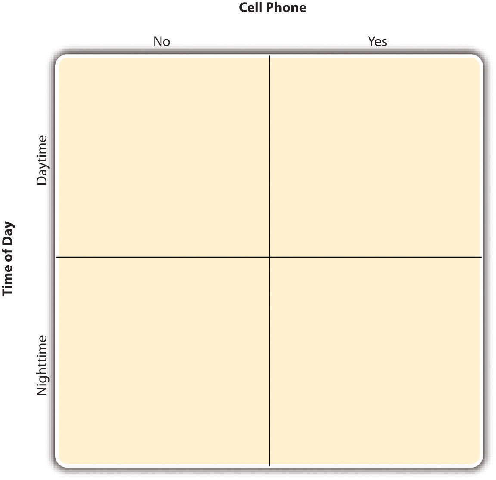
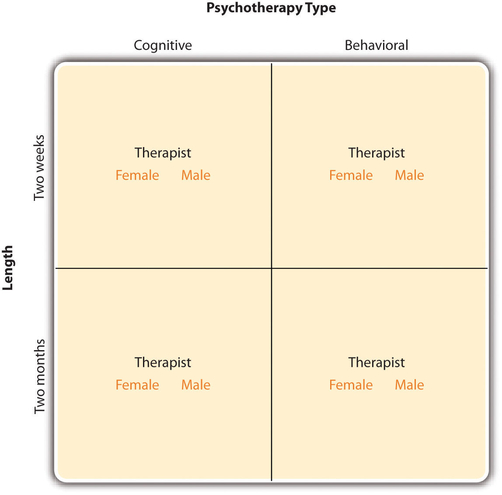
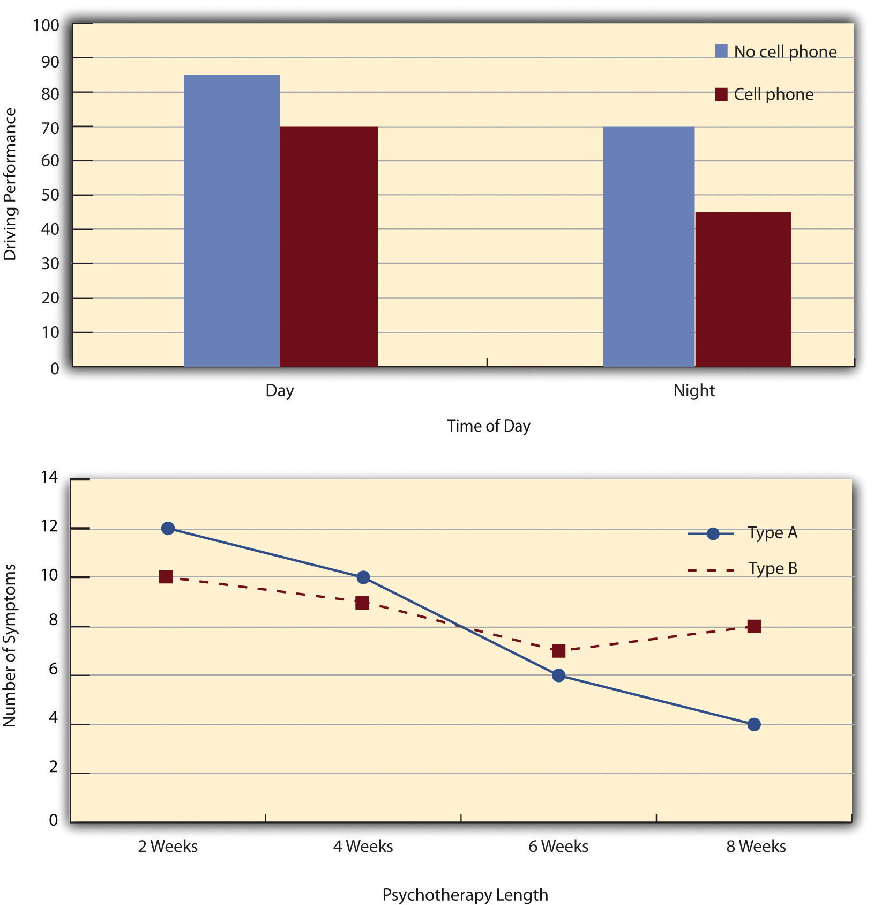
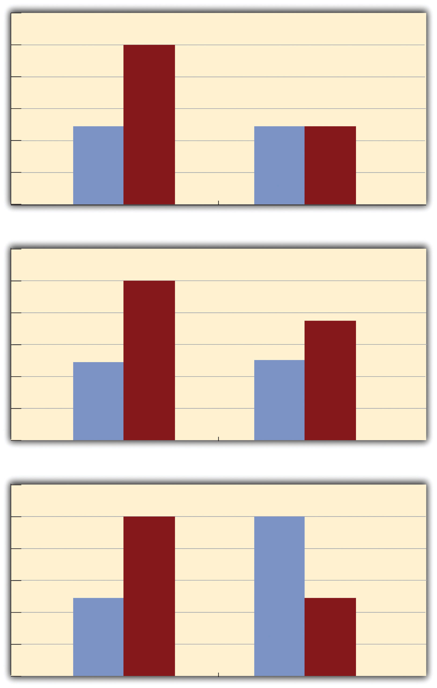
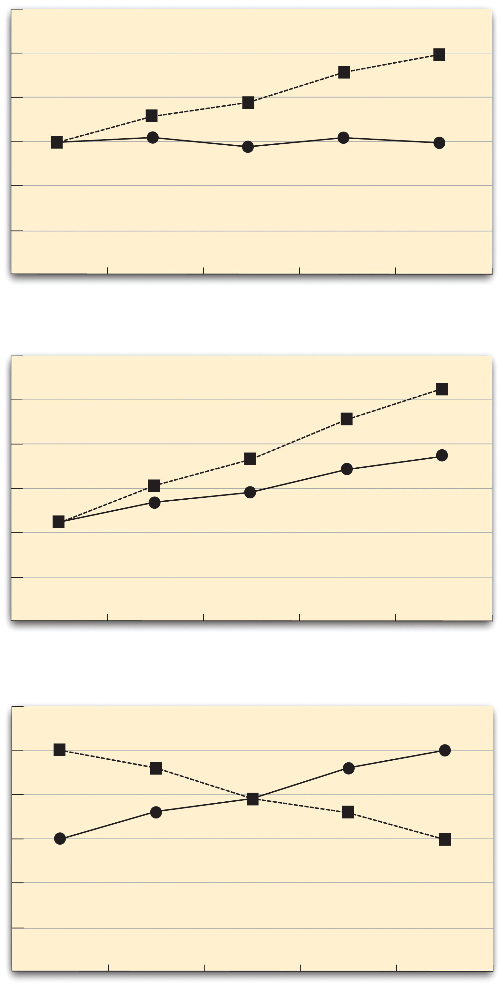

Just as it is common for studies in psychology to include multiple dependent variables, it is also common for them to include multiple independent variables. Schnall and her colleagues studied the effect of both disgust and private body consciousness in the same study. Researchers’ inclusion of multiple independent variables in one experiment is further illustrated by the following actual titles from various professional journals:
Just as including multiple dependent variables in the same experiment allows one to answer more research questions, so too does including multiple independent variables in the same experiment. For example, instead of conducting one study on the effect of disgust on moral judgment and another on the effect of private body consciousness on moral judgment, Schnall and colleagues were able to conduct one study that addressed both questions. But including multiple independent variables also allows the researcher to answer questions about whether the effect of one independent variable depends on the level of another. This is referred to as an interaction between the independent variables. Schnall and her colleagues, for example, observed an interaction between disgust and private body consciousness because the effect of disgust depended on whether participants were high or low in private body consciousness. As we will see, interactions are often among the most interesting results in psychological research.
By far the most common approach to including multiple independent variables in an experiment is the factorial design. In a factorial designA research design with multiple independent variables in which each level of one independent variable is combined with each level of the others to produce all possible conditions., each level of one independent variable (which can also be called a factorAn independent variable in a factorial design. Also in factor analysis, one of the underlying constructs that is assumed to account for correlations among multiple variables.) is combined with each level of the others to produce all possible combinations. Each combination, then, becomes a condition in the experiment. Imagine, for example, an experiment on the effect of cell phone use (yes vs. no) and time of day (day vs. night) on driving ability. This is shown in the factorial design tableA table used to represent a factorial design. The rows represent the levels of one independent variable, the columns represent the levels of a second independent variable, and each cell represents a condition. in Figure 8.2 "Factorial Design Table Representing a 2 × 2 Factorial Design". The columns of the table represent cell phone use, and the rows represent time of day. The four cells of the table represent the four possible combinations or conditions: using a cell phone during the day, not using a cell phone during the day, using a cell phone at night, and not using a cell phone at night. This particular design is a 2 × 2 (read “two-by-two”) factorial design because it combines two variables, each of which has two levels. If one of the independent variables had a third level (e.g., using a handheld cell phone, using a hands-free cell phone, and not using a cell phone), then it would be a 3 × 2 factorial design, and there would be six distinct conditions. Notice that the number of possible conditions is the product of the numbers of levels. A 2 × 2 factorial design has four conditions, a 3 × 2 factorial design has six conditions, a 4 × 5 factorial design would have 20 conditions, and so on.
Figure 8.2 Factorial Design Table Representing a 2 × 2 Factorial Design
In principle, factorial designs can include any number of independent variables with any number of levels. For example, an experiment could include the type of psychotherapy (cognitive vs. behavioral), the length of the psychotherapy (2 weeks vs. 2 months), and the sex of the psychotherapist (female vs. male). This would be a 2 × 2 × 2 factorial design and would have eight conditions. Figure 8.3 "Factorial Design Table Representing a 2 × 2 × 2 Factorial Design" shows one way to represent this design. In practice, it is unusual for there to be more than three independent variables with more than two or three levels each because the number of conditions can quickly become unmanageable. For example, adding a fourth independent variable with three levels (e.g., therapist experience: low vs. medium vs. high) to the current example would make it a 2 × 2 × 2 × 3 factorial design with 24 distinct conditions. In the rest of this section, we will focus on designs with two independent variables. The general principles discussed here extend in a straightforward way to more complex factorial designs.
Figure 8.3 Factorial Design Table Representing a 2 × 2 × 2 Factorial Design
Recall that in a simple between-subjects design, each participant is tested in only one condition. In a simple within-subjects design, each participant is tested in all conditions. In a factorial experiment, the decision to take the between-subjects or within-subjects approach must be made separately for each independent variable. In a between-subjects factorial designA factorial design in which each independent variable is manipulated between subjects so that each participant is tested in only one condition., all of the independent variables are manipulated between subjects. For example, all participants could be tested either while using a cell phone or while not using a cell phone and either during the day or during the night. This would mean that each participant was tested in one and only one condition. In a within-subjects factorial designA factorial design in which each independent variable is manipulated within subjects so that each participant is tested in all conditions., all of the independent variables are manipulated within subjects. All participants could be tested both while using a cell phone and while not using a cell phone and both during the day and during the night. This would mean that each participant was tested in all conditions. The advantages and disadvantages of these two approaches are the same as those discussed in Chapter 6 "Experimental Research". The between-subjects design is conceptually simpler, avoids carryover effects, and minimizes the time and effort of each participant. The within-subjects design is more efficient for the researcher and controls extraneous participant variables.
It is also possible to manipulate one independent variable between subjects and another within subjects. This is called a mixed factorial designA factorial design in which at least one independent variable is manipulated between subjects and at least one is manipulated within subjects.. For example, a researcher might choose to treat cell phone use as a within-subjects factor by testing the same participants both while using a cell phone and while not using a cell phone (while counterbalancing the order of these two conditions). But he or she might choose to treat time of day as a between-subjects factor by testing each participant either during the day or during the night (perhaps because this only requires them to come in for testing once). Thus each participant in this mixed design would be tested in two of the four conditions.
Regardless of whether the design is between subjects, within subjects, or mixed, the actual assignment of participants to conditions or orders of conditions is typically done randomly.
In many factorial designs, one of the independent variables is a nonmanipulated independent variableIn a factorial design, a variable (usually a participant variable) that is treated as an independent variable but is not actually manipulated by the researcher.. The researcher measures it but does not manipulate it. The study by Schnall and colleagues is a good example. One independent variable was disgust, which the researchers manipulated by testing participants in a clean room or a messy room. The other was private body consciousness, which the researchers simply measured. Another example is a study by Halle Brown and colleagues in which participants were exposed to several words that they were later asked to recall (Brown, Kosslyn, Delamater, Fama, & Barsky, 1999).Brown, H. D., Kosslyn, S. M., Delamater, B., Fama, A., & Barsky, A. J. (1999). Perceptual and memory biases for health-related information in hypochondriacal individuals. Journal of Psychosomatic Research, 47, 67–78. The manipulated independent variable was the type of word. Some were negative health-related words (e.g., tumor, coronary), and others were not health related (e.g., election, geometry). The nonmanipulated independent variable was whether participants were high or low in hypochondriasis (excessive concern with ordinary bodily symptoms). The result of this study was that the participants high in hypochondriasis were better than those low in hypochondriasis at recalling the health-related words, but they were no better at recalling the non-health-related words.
Such studies are extremely common, and there are several points worth making about them. First, nonmanipulated independent variables are usually participant variables (private body consciousness, hypochondriasis, self-esteem, and so on), and as such they are by definition between-subjects factors. For example, people are either low in hypochondriasis or high in hypochondriasis; they cannot be tested in both of these conditions. Second, such studies are generally considered to be experiments as long as at least one independent variable is manipulated, regardless of how many nonmanipulated independent variables are included. Third, it is important to remember that causal conclusions can only be drawn about the manipulated independent variable. For example, Schnall and her colleagues were justified in concluding that disgust affected the harshness of their participants’ moral judgments because they manipulated that variable and randomly assigned participants to the clean or messy room. But they would not have been justified in concluding that participants’ private body consciousness affected the harshness of their participants’ moral judgments because they did not manipulate that variable. It could be, for example, that having a strict moral code and a heightened awareness of one’s body are both caused by some third variable (e.g., neuroticism). Thus it is important to be aware of which variables in a study are manipulated and which are not.
The results of factorial experiments with two independent variables can be graphed by representing one independent variable on the x-axis and representing the other by using different kinds of bars or lines. (The y-axis is always reserved for the dependent variable.) Figure 8.4 "Two Ways to Plot the Results of a Factorial Experiment With Two Independent Variables" shows results for two hypothetical factorial experiments. The top panel shows the results of a 2 × 2 design. Time of day (day vs. night) is represented by different locations on the x-axis, and cell phone use (no vs. yes) is represented by different-colored bars. (It would also be possible to represent cell phone use on the x-axis and time of day as different-colored bars. The choice comes down to which way seems to communicate the results most clearly.) The bottom panel of Figure 8.4 "Two Ways to Plot the Results of a Factorial Experiment With Two Independent Variables" shows the results of a 4 × 2 design in which one of the variables is quantitative. This variable, psychotherapy length, is represented along the x-axis, and the other variable (psychotherapy type) is represented by differently formatted lines. This is a line graph rather than a bar graph because the variable on the x-axis is quantitative with a small number of distinct levels.
Figure 8.4 Two Ways to Plot the Results of a Factorial Experiment With Two Independent Variables
In factorial designs, there are two kinds of results that are of interest: main effects and interaction effects (which are also called just “interactions”). A main effectIn a factorial design, the effect of one independent variable averaged across levels of all other independent variables. is the statistical relationship between one independent variable and a dependent variable—averaging across the levels of the other independent variable. Thus there is one main effect to consider for each independent variable in the study. The top panel of Figure 8.4 "Two Ways to Plot the Results of a Factorial Experiment With Two Independent Variables" shows a main effect of cell phone use because driving performance was better, on average, when participants were not using cell phones than when they were. The blue bars are, on average, higher than the red bars. It also shows a main effect of time of day because driving performance was better during the day than during the night—both when participants were using cell phones and when they were not. Main effects are independent of each other in the sense that whether or not there is a main effect of one independent variable says nothing about whether or not there is a main effect of the other. The bottom panel of Figure 8.4 "Two Ways to Plot the Results of a Factorial Experiment With Two Independent Variables", for example, shows a clear main effect of psychotherapy length. The longer the psychotherapy, the better it worked. But it also shows no overall advantage of one type of psychotherapy over the other.
There is an interactionIn a factorial design, when the effect of one independent variable depends on the level of another independent variable. effect (or just “interaction”) when the effect of one independent variable depends on the level of another. Although this might seem complicated, you have an intuitive understanding of interactions already. It probably would not surprise you, for example, to hear that the effect of receiving psychotherapy is stronger among people who are highly motivated to change than among people who are not motivated to change. This is an interaction because the effect of one independent variable (whether or not one receives psychotherapy) depends on the level of another (motivation to change). Schnall and her colleagues also demonstrated an interaction because the effect of whether the room was clean or messy on participants’ moral judgments depended on whether the participants were low or high in private body consciousness. If they were high in private body consciousness, then those in the messy room made harsher judgments. If they were low in private body consciousness, then whether the room was clean or messy did not matter.
The effect of one independent variable can depend on the level of the other in different ways. This is shown in Figure 8.5 "Bar Graphs Showing Three Types of Interactions". In the top panel, one independent variable has an effect at one level of the second independent variable but no effect at the others. (This is much like the study of Schnall and her colleagues where there was an effect of disgust for those high in private body consciousness but not for those low in private body consciousness.) In the middle panel, one independent variable has a stronger effect at one level of the second independent variable than at the other level. This is like the hypothetical driving example where there was a stronger effect of using a cell phone at night than during the day. In the bottom panel, one independent variable again has an effect at both levels of the second independent variable, but the effects are in opposite directions. Figure 8.5 "Bar Graphs Showing Three Types of Interactions" shows the strongest form of this kind of interaction, called a crossover interactionAn interaction in which one independent variable has opposite effects at different levels of another independent variable.. One example of a crossover interaction comes from a study by Kathy Gilliland on the effect of caffeine on the verbal test scores of introverts and extroverts (Gilliland, 1980).Gilliland, K. (1980). The interactive effect of introversion-extroversion with caffeine induced arousal on verbal performance. Journal of Research in Personality, 14, 482–492. Introverts perform better than extroverts when they have not ingested any caffeine. But extroverts perform better than introverts when they have ingested 4 mg of caffeine per kilogram of body weight. Figure 8.6 "Line Graphs Showing Three Types of Interactions" shows examples of these same kinds of interactions when one of the independent variables is quantitative and the results are plotted in a line graph. Note that in a crossover interaction, the two lines literally “cross over” each other.
Figure 8.5 Bar Graphs Showing Three Types of Interactions
In the top panel, one independent variable has an effect at one level of the second independent variable but not at the other. In the middle panel, one independent variable has a stronger effect at one level of the second independent variable than at the other. In the bottom panel, one independent variable has the opposite effect at one level of the second independent variable than at the other.
Figure 8.6 Line Graphs Showing Three Types of Interactions
In the top panel, one independent variable has an effect at one level of the second independent variable but not at the other. In the middle panel, one independent variable has a stronger effect at one level of the second independent variable than at the other. In the bottom panel, one independent variable has the opposite effect at one level of the second independent variable than at the other.
In many studies, the primary research question is about an interaction. The study by Brown and her colleagues was inspired by the idea that people with hypochondriasis are especially attentive to any negative health-related information. This led to the hypothesis that people high in hypochondriasis would recall negative health-related words more accurately than people low in hypochondriasis but recall non-health-related words about the same as people low in hypochondriasis. And of course this is exactly what happened in this study.